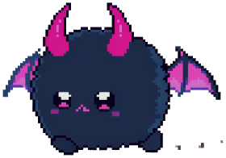
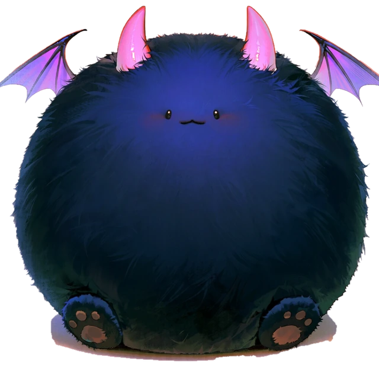

SYSTEM NOTIFICATION
《MISTVALE》 접속 완료
새로운 농장주의 기록이 작성되었습니다.
등록 정보
- 위치
- 미스트베일 외곽 농가
- 날짜
- 1년 차 · 봄 1일
- 소지금
- 500G
- 소유 자산
- 낡은 농가와 작은 밭
이제, 무엇을 할까?
오래된 농장에서 시작되는, 당신만의 두 번째 일상.
픽셀그래픽 · 농장생활 · 자유탐험
스크린샷 5장 · 좌우 버튼 또는 아래 이미지를 선택하세요.
안개가 머무는 계곡, 오래된 농장, 그리고 새로운 계절. 농사와 낚시, 채집과 제작을 즐기며 미스트베일의 하루를 채워 보세요. 정해진 이야기는 없습니다. 무엇을 하고 누구를 만날지는 오직 당신에게 달려 있습니다.
A QUIET LIFE. AN UNWRITTEN STORY.
미 스 트 베 일
평화로운 농장, 조용한 마을.
그리고 아직 당신만 모르는 이야기.
당신을 기다리는 작은 세계
새로운 농장을 불러오는 중...


✦SYSTEM NOTIFICATION
새로운 농장주의 기록이 작성되었습니다.
이제, 무엇을 할까?
뭐야, 벌써 도망가려고?
아직 시작도 안 했는데?
브라우저 저장이 제한되어 이번 방문 동안만 기록됩니다.